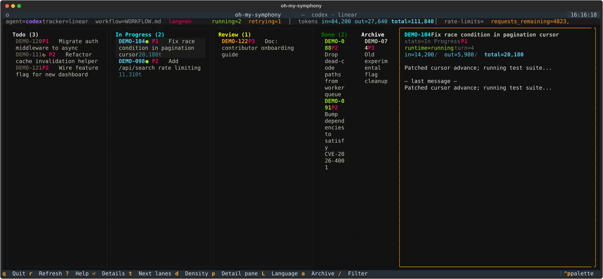

One terminal.
One Kanban board.
Seven AI coding agents.
Codex · Claude Code · Gemini · AGY · Kiro · OpenCode · Pi — pick per ticket, run in parallel inside isolated git worktrees, watch live in a Jira-style TUI you never have to leave your terminal for.

› columns are your tracker's states · cards show active agent, turn count, last event, accumulated tokens · ● running, ↻ retry queued, ✓ done.
> Why Symphony
A file-first orchestrator fork with seven agents, a Jira-style TUI, a built-in web board, and local reliability guardrails.
No vendor lock-in
Swap Codex ↔ Claude Code ↔ Gemini ↔ AGY ↔ Kiro ↔ OpenCode ↔ Pi with one YAML line. New agents drop in behind a thin AgentBackend Protocol.
Live progress
Turn count, last event, accumulated tokens, and rate-limit headroom for every running card. No more "is it stuck or just thinking?" — and no SaaS dashboard to log into.
Parallel by default
Every ticket gets its own git worktree workspace. Agents can't step on each other. Headless mode mirrors progress to a Markdown file you can tail -F.
No SaaS, no API key to try
File-based Markdown Kanban means tickets live in git next to your code. Linear and Jira are supported external trackers — you don't need either one.
Crash-safe local state
SQLite run leases block duplicate dispatch after restart, and issue flags keep retry, pause, and budget-exhausted state visible across process exit.
Operator-grade tooling
symphony doctor catches common first-run failures. symphony service runs one managed background service per workflow. /api/v1/health reports runtime health.
> Try it in 60 seconds
Start with the file-board workflow, run doctor, then open the TUI or the web board. The README includes a no-agent mock backend walkthrough.
-
01
Install
Clone the repo, create a Python 3.12+ virtualenv, and install the package with dev extras.
-
02
Launch the TUI
Point Symphony at any
WORKFLOW.md. Columns become Kanban lanes, cards become tickets. -
03
Watch agents pick up tickets
Add a ticket; the configured agent claims it, runs in its own git worktree, and streams turn counts + tokens live.
# 1. clone + install $ git clone https://github.com/cskwork/oh-my-symphony.git $ cd oh-my-symphony $ python3 -m venv .venv && source .venv/bin/activate $ pip install -e ".[dev]" # 2. create a local file-board workflow $ cp WORKFLOW.file.example.md WORKFLOW.md $ symphony board init ./kanban # 3. preflight, then open the operator view $ symphony doctor ./WORKFLOW.md $ symphony tui ./WORKFLOW.md # or serve the web board + JSON API $ symphony ./WORKFLOW.md --port 9999
> Agent matrix
Each backend is a thin adapter over the agent's official CLI. Set agent.kind in your WORKFLOW.md — or mix backends per ticket.
| Agent | CLI invocation | Transport | Resume | Best for |
|---|---|---|---|---|
| Codex | codex app-server | JSON-RPC stdio · multi-turn | native | Original Symphony agent · long codebase sessions |
| Claude Code | claude -p --output-format stream-json | NDJSON events · per-turn subprocess | --resume | Complex multi-file refactors · long planning |
| Gemini | gemini -p "" | one-shot per turn · stdin → stdout | stateless | Quick edits · large-context one-shots |
| AGY / Antigravity | agy --print - | one-shot per turn · stdin → stdout | --continue | Forward path for Google Antigravity CLI runs |
| Kiro | kiro-cli chat --no-interactive --trust-all-tools "$(cat)" | plain stdout · headless chat | --resume | Kiro headless workflows with API key or CLI login |
| OpenCode | opencode run --format json --auto | JSON events · per-turn subprocess | --session | Provider-flexible automation through OpenCode's CLI |
| Pi | pi --mode json -p "" | JSONL events · per-turn subprocess | --session | Multi-backend (Anthropic / OpenAI / Gemini / Bedrock under one CLI) |
# pick an agent — one YAML line agent: kind: claude # codex | claude | gemini | agy | kiro | opencode | pi # or mix per ticket via card front-matter
> Who this is for
Solo devs
Running unattended overnight refactors across dozens of tickets while you sleep. macOS keep-awake stops the lock screen from killing your pipeline.
Teams
Parallelizing bug fixes, doc updates, or migration tickets across multiple coding agents simultaneously — without juggling multiple chat windows.
Researchers & reviewers
Comparing how Codex, Claude Code, Gemini, AGY/Antigravity, Kiro, OpenCode, and Pi tackle the same task side by side — identical prompts, identical workspaces.
Stop juggling AI coding CLIs.
One terminal. One Kanban. Five agents working in parallel — visible, isolated, and yours.